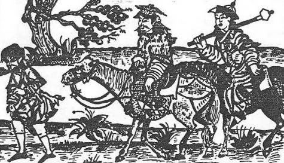

Uygurların Oğuz destanında, Oğuz-Han'ın İtil nehri bölgelerine yaptığı akın, Çin'de Altun-Han'a yaptığı akından hemen sonra olmuştur. Yani Oğuz-Han'ın ikinci seferidir. Uygurların Oğuz destanının tam tercümesini şiir halinde vermiştik. Bu bölümdeki Oğuz-Han'ın akınlarının sırası ise, Reşideddin'in Câmi üt-Tevârih adlı eserindeki farsça Oğuz- Nâme'ye göre düzenlenmiştir.

Şekil 32: Oğuz-Han, Başkurd savaşında.
Oğuz-Han'ın Başgurdlara karşı yaptığı akın, yalnızca Topkapı Sarayı, Hazine, Nr. 1653, yap. 377'da anlatılmıştır. Bu kaydı ilk defa ilim âlemine tanıtan, kıymetli meslektaşım Prof. Dr. Faruk Sümer olmuştur. Yine Prof. Sümer'in lütfettiği bu metnin fotokopilerinden aşağıya bir özet vermeyi faydalı buluyoruz:
"Oğuz-Han Gur ve Garcistan'ı aldıktan sonra, Gûrk-i Başgurd361 ülkesine gitti. Başgurdlar, önceleri Oğuz-Han ile iyi geçinirlerdi.362 Sonradan, birbirlerine düşman oldular. Oğuz-Han onları mağlup etti ve sonra da şefaat gösterdi...
"Oğuz-Han zamanında ihtiyarlara saygı gösterilir363 ve onlara "Aka" derlerdi.364 Onların, akın sırasında yurtta kalmaları emredilmişti. Onlar da Oğuz-Han'a "Ok-Tukra-Oğuz"365 derlerdi. Oğuz-Han, Başgurd seferinden sonra, Almalıg yakınında "Ak-Kaya" adlı yere geldi. O sırada " Tuşı-Hoca" adlı birisi vardı.366 Moğolcada ona "Melik-Kulı367" derlerdi. Türkler, ihtiyarlara "Hoca368'' derler. Bu söz, farsça veya Arapça bir söz değil; Türkçe bir sözdür. Oğlunun adı ise, Kara-Sülek'dir.369 Babası bir gün oğluna şöyle dedi:
- "Siz tanımadığınız bir yere nasıl böyle gidersiniz? Aranızda yaşlı ve bilgili bir kimse yoktur. Eğer karşınıza bir müşkül çıkarsa ne yaparsınız? Beni de yanında götür ki, böyle zor anlarda sizin işinize yarayayım". Oğlu da ona:
- "Ey baba! Ben Oğuz-Han'ın fermanına aykırı nasıl bir iş yapabilirim?" Dedi En sonunda, oğlu babasını bir sandık içine kor ve sandığı da, bir deveye yükleyerek, Oğuz-Han'ın haberi olmadan, gizlice yanında Başgurd iline götürür. Başgurdlar savaşçı bir kavim idiler ve padişahlarına da "Kara-Şit370" derlerdi. "Gûrk-i Başgurd" ili mağlûp edildikten sonra, yollarına devam ettiler ve bir katre su bulunmayan bir çöle geldiler. Bir damla su bile bulamadılar. Kara-Sülek durumu babasına anlattı. Babası da ona şöyle dedi:
- "Sığırları birbirine bağlayıp iyice koşturun ve sonra da serbest bırakın. Sığırlar ayaklarını nereye vururlarsa, o yerde muhakkak olarak su vardır. Onlar da öyle yaptılar ve hakikaten sığırların ayaklarını vurdukları yerden su çıktı. Askerler bol bol su içtiler, Oğuz-Han da bundan çok memnun kaldı. Kara-Sülek'e bol bol hediyeler verdi ve onu bütün ulusun yurtçı’sı yaptı."
"Oradan İtil (Volga) ırmağına gelmişlerdi. Uruk- Kara - Köl371 adlı bir yere eriştiler. Buranın halkı, Oğuz-Han'ın geldiğini duyunca, neleri var, neleri yoksa bırakıp kaçtılar. Oğuz-Han'ın askerleri, nehrin içinde leğen, kova, kazan vs. altından yapılmış eşyalar görmüşler ve bunları almak için suyun içine dalmışlardı. Fakat eşyaları, bütün aramalarına rağmen, suyun içinde bulamamaları üzerine, herkes hayretler içinde kalmıştı. Kara-Sülek, bu durumu da hemen gidip babasına anlattı. Babası hemen ona, ırmağın kenarında yüksek bir yerin olup olmadığını sordu. Kara-Sülek de babasına, nehrin kenarında yüksek bir ağacın bulunduğunu söyledi. Bunun üzerine babası, "Suda gördüğünüz şeyler, ağacın üstündeki eşyaların suya aksinden başka bir şey değildir", dedi. Kara-Sülek hemen giderek ağaca çıktı ve suda görünen eşyaların hepsini ağaçtan alıp aşağıya indirdi. Yanında götürerek Oğuz-Han'a sundu372".
Farsça Oğuz-nâme'de, gerçi Oğuz-Han'ın Güney Rusya ve Kafkas Derbendindeki akınlarından söz açılmıştır. Fakat Oğuz-Han'ın İdil bölgesindeki akınlarında en büyük ağırlık ve önem, Başgırd'larla olan savaşlarına verilmiştir. Han-nâme, bir "Özbek ve Kıpçak destanı" idi. Bu sebeple Oğuz-Han'ın veyahut da Han-nâme'nin deyimi ile Ozgan-Han'ın akınlarının büyük bir kısmı hep İdil boylarında ve Güney Rusya'da geçmişti. Birçok yerlerde söylediğimiz gibi, Farsça Oğuz namede, Çingiz- Han devleti ve sonraki Hanlıklarının, an'ane ve inanışlarının tesirinden kurtulamamıştı. Ona göre Oğuz-Han, bir nevi Çingiz-Han gibi idi.
Yukarıdaki sebeplerden dolayı Oğuz-Han'ın Başgırd akınlarını incelerken, bilhassa Başgırdlar hakkında Çingiz-Han ve oğulları çağında verilen bilgileri göz önünde tutarak bir aydınlığa kavuşmada fayda vardır. Güney Rusya'da o kadar Türk veya Türk olmayan kavim var iken, destanın Başgırdlara bu kadar önem vermesinin sebebi pek anlaşılamıyor. Çingiz-Han çağında Güney Rusya'dan geçen meşhur seyyahlardan Rubruk, Başgırdlardan Pascatır veya Pascatur adı ile bahseder.373 Plano Carpini ise, yine Başgırdlara, Bascard ve bazan da çoğul şekli ile Bascartos veya Bascardes der.374 Rubruk'a göre, bu sırada Başgırdlar, Volga ile Ural nehirleri arasında otururlarmış. Onların komşuları da, Illac veya Ilac adlı ülke veya kavim imiş.
Han-nâme, Başgırd'lardan hiç söz açmadığı halde, Ilak ülkesi veya Ilah-Han, onun hemen hemen her sahifesinde geçen ve Oğuz-Han (Ozgan) ile soylarının en yakın dostu ve müttefiki olan bir Hanlıktır. Görülüyor ki Farsça destandaki Başgırd Hanlığının yerini, Han-nâme'de yine Başgırdların en yakın komşusu olan Ilak'lar almıştır. Marco Polo, Lac (Ilak) ilinden söz açtığı halde, Başgırdlar konusunda susmuştur. Marco Polo, Sartaktai'in oğlu Koniçi'nin arazisinden söz ederken, buraların "Karanlık ülkeler" olduğunu ve bu bölgelere Lac adı verildiğini de yazar.375
Güney-Rusya'yı zapt eden Çingiz-Han'ın meşhur generali Sübötey-Bahadır'ın savaşlarından söz açılırken de, Başgırdların adı geçer; fakat llak'dan söz edilmez.376 Bundan da anlaşılıyor ki, Başgırdlar Çingiz-Han Devletince iyi tanınıyor ve Ilak'lara fazla önem verilmiyordu. Etnik bakımdan Başgırd adı, Çingiz-Han ve oğulları zamanında çok geniş ülkeler ve birçok kavimler topluluğu için kullanılan umumî bir ad idi. Bu sebeple üstat Pelliot'nun, "Başgırd adını taşıyan kavimler, Kıpçak çölünden Kırgız ülkesine, yani Yenisey bölgelerine kadar uzanıyordu," şeklinde ileri sürdüğü nazariyesi hiç de boş değildir.377 Bu durumu gördükten sonra, Farsça destanın Başgırdlara niçin bu kadar önem verdiği de kendiliğinden ortaya çıkmaktadır.
Başgırd adı, umumî bir ad olarak batıya da uzanıyor ve birçok kavimleri içine alıyordu. Meselâ bazı İran kaynaklarına göre, "Keler ve Başgırd'lar Hıristiyan idiler ve Firenk'lerin yakınlarında oturuyorlardı.378" Başgırdların, bu kadar batıya kadar uzamalarına imkân yoktur. Bazı kaynaklar da, "Macar'lara Batı Başgırdları" adını verirler.379
Bütün bunlar bize gösteriyor ki, Moğol çağında "Başgırd" dendi mi, çoğu zaman doğudaki Yenisey nehri boylarından, ta Macaristan ovalarına kadar uzanan kavimlerin tümü hatıra geliyordu. Bu sebeple Farsça Oğuz-nâme'deki Başgırd'lar, yalnızca bizim bugünkü bilgimiz ile Başgırd Türkleri dediğimiz etnik toplumu ifade etmiyordu. Burada Başgırd sözü, Oğuz-Han'ın Kuzey ve Güney Rusya akınlarını ifade eden sembolik bir söz mahiyetinde olmalı idi.
Artık Başgırdların ve İdil nehrinin ötelerinde, kuzey-batıda, Marco Polo'nun da "Karanlık ülkeler" dediği Fin-Ugor ve Rus sahaları geliyordu. Avrupa efsanelerinin Borus dediği köpek başlı insanları bu bölgelerde yaşıyorlardı. Farsça Oğuznâme'nin İt-Barak'ları da bu bölgelerdedir.
Artık Ebülgazi Bahadır Han zamanında Başgırdlar iyice tanınıyordu. Oğuz-Han'ın bu bölgelerdeki akınlarından bahsederek şöyle diyordu: "Ulak, Macar ve Başgırd illeri Oğuz-Han'a düşman idiler. Bunun için Oğuz-Han Kıpçak'a birçok halk (il) ve beyler (nöker) vererek, onu Ten (Don) ve Etil (Volga) bölgesine gönderdi. Kıpçak o ülkeleri 300 sene idare etti380..." Görülüyor ki burada eski Ilak, gerçek şeklini bularak Ulak olmuştur. Ilac'ı Eflak ve Vlak'la birleştirenler çoktur. Buna rağmen yine görülüyor ki Başgırdlar, Macar ve Ulaklar gibi uzak ülkelerin yanında geçmektedirler.
Han-nâme'nin Ulak'ı Ilak şeklinde söylemesini, biraz da çok eski Kıpçak ve sonraki Altın-Ordu tesirlerinde aramak lâzımdır. Han-nâme, tamamı ile uydurularak yazılmamıştır. Kıpçak bölgesinde söylenen birçok efsaneleri de içine almıştır.
"Bu kabile adı, eski zamanlarda yoktu. Oğuzlar bu memlekete geldiklerinde, onlardan bir kısım halk topluluğu, ormanları kendilerine yurt edinmiş ve oralarda yerleşmişlerdi, işte bu sebepten dolayı bu halklara "Ağaç-eri", yani "ormanda yaşayan insanlar" adı verilmiştir. Moğol boylarından bazılarının yurtları da, orman içlerinde veya orman kenarındadır. Bunun için onlara da "Hoyin-irgen", yani, 'orman halkı' adı verilmiştir"381.
"Oğuz-Han'ın yirmi dört oğlunun, yarısı sağ yana ve diğer yarısı da sol yana ayrılmışlar ve herkes de bu iki bölümden birine bağlanmışlardı. Günümüzde o soylardan her biri, kendilerinin bağlı oldukları bölümü ve hangi boydan geldiklerini bilirler.
"Oğuz-Han'ın altı oğlu vardı. Bu oğullarının adları şunlardır:
"Gün (Kün), Ay, Yıldız (Yulduz), Gök (Kök), Dağ (Tak) ve Deniz (Tenggiz).
"Türklerin tarihlerinde ve yazdığımız bu kutsal tarihin ilâve bölümünde de bildirildiği gibi Oğuz-Han, bütün İran ve Turan ülkeleri ile Şam, Mısır, Rum ve diğer memleketlerin hepsini zapt etmiş idi. Bütün bu ülkeleri aldıktan sonra, kendi yurdu olan, Ortak ve Kürtak'a dönmüştü."382
"Babalarıyla beraber akınlara gidip, sonra da esenlikle dönen Oğuz-Han'ın altı oğlu toydan sonra383, büyük bir ava çıktılar. Hepsi birlikte avlanırken, altından yapılmış bir yay ile yine altından yapılmış olan, üç tane ok buldular. Altın yayla okları babalarına getirdiler ve bu yay ile okları, aramızda nasıl bölelim, diye sordular.
"Oğuz-Han, altın yayı üç büyük oğluna ve üç altın oku da, üç küçük oğluna verdi.
"Altın yayı alan üç büyük oğlunun soyundan gelenlere, Bozok adını verdi. "Bozok" sözü, "bölmek ve parçalamak" anlamına gelir. Çünkü yayı üç oğlu arasında bölmek için, elbet de yayı kırması gerekiyordu. Bunun için de bu söz, onların soylarının bir ünvanı olarak kalmıştır. Ordunun sağ kolu, bu üç büyük çocukla, onların soylarından gelen boylara ait idi.
"Oğuz-Han, üç altın oku da üç küçük oğluna vermişti. Bu çocukların soylarına da Üç-Ok adını verdi. Bu adın verilmesinin sebebi de okların üç tane olmasından ileri geliyordu. Ordunun sol kolu'na da, bu üç oğlunun oğulları ile soylarının emretmesini buyurdu.384
"(Oğuz-Han, Masar, yani Mısır? Kağanını yendi ve Masar-Kağan kaçtı. Oğuz-Han, onu da buyruğu altına alıp, yurdunu eline geçirdi ve gitti. Oğuz-Han'ın dostları çok sevindiler, düşmanları ise üzüldüler. Oğuz-Kağan onu yendi ve sayısız eşyalar ile atlar alıp, evine doğru yola koyuldu ve gitti.)
"Yine söylenmeden kalmasın (ve herkesçe) belli olsun ki, Oğuz- Kağan'ın yanında aksakallı, kır (Moz, yani boz), saçlı, uzun tecrübeli (Usun uzluğ) bir ihtiyar vardı. Bu ihtiyar, çok anlayışlı ve soylu bir kimse idi. Kendisi Oğuz-Han'ın veziri idi. Adı da Uluğ-Türük idi.
"Günlerden bir gün uykuda, bir altın yay ile üç gümüş ok görmüştü. Altın yay, gün doğusundan gün batısına kadar uzanıyordu. Üç gümüş ok da kuzeye doğru gidiyordu. Uluğ-Türük uykudan uyanınca, rüyada gördüklerini Oğuz-Kağan'a anlattı ve ona ayrıca şöyle dedi385:
- "Ey Kağanım! Bu rüyanız sizin yaşantınız için uğurlu olsun! Ey Kağanım! Bu rüya, size dirlik versin! Gök Tanrı rüyamda ne gördüysem, onu gerçek yapsın! Dola duran yeryüzünü, Tanrı sizin soyunuza versin !" Dedi.
"Oğuz-Kağan, Uluğ-Türük'ün sözlerini çok güzel buldu. Onun öğüdünü (kendince de) diledi ve onun öğüdüne göre hareket etti. Ondan sonra sabah oldu ve bütün, büyük ve küçük oğullarını çağırdı ve onlara şöyle dedi:
- "Hey, hey! Benim gönlüm avlanmak istiyor! Ama ihtiyarım! Benim artık gücüm yok! (Büyük oğullarım), Gün, Ay ve Yıldız, sizler doğu yönüne doğru gidin; Gök, Dağ ve Deniz, sizler de batıya gidin!"
"(Bu buyruktan sonra, oğullarından) üçü doğuya; üçü de batıya gittiler. Gün, Ay ve Yıldız, çok av ve çok da kuş avladılar. Yolda bir altın yay buldular. Yayı alıp, babalarına verdiler. Oğuz-Han, sevindi ve güldü, yayı üçe bölerek, şöyle dedi:
- "Ey büyük (oğullarım)! Bu yay, sizlerin olsun! Bu yay gibi olun ve okları göklere atın!"
"Gök, Dağ ve Deniz de çok av ve çok kuş avladılar. Onlar da yolda üç gümüş ok buldular ve okları alıp, babalarına verdiler. Oğuz Kağan, (bunlara da) sevindi ve güldü; üç oku (küçük oğullarına) verdi ve:
- "Ey küçük (oğullarım)! Oklar sizlerin olsun! Yay okları atsın! Sizler de ok gibi olun! Dedi.386"
Reşideddin, Oğuz-Han'ın çocukları ile konuşmasını şöyle anlatıyor:
"Bundan sonra onların oğullarının da aynı Unvanı taşımaları ve bu adlarla, (Yani Bozok ve Üç-Ok), herkesin hangi koldan geldiklerinin bilinmesini ferman buyurdu. Oğuz-Han, oğullarına ve halkına ayrıca şöyle dedi:
- "Sağ-kol daha büyüktür. Bu yay da hükümdarlığın bir sembolüdür. Hükümdarlığın yerini tutar. Bu sebeple bu yayı, büyük oğullarıma verdim. Okları verdiğim üç küçük oğlum ise, birer elçi gibidirler", Oğuz- Han bunları dedikten sonra, ülkesinin sağ ve sol yönlerini, bu yolla çocuklarına vermiş oldu. Ayrıca, şöyle de bir vasiyette bulundu:
- "Benden sonra, padişahlık tahtım ve benim yerime Han olarak geçme hakkı, Bozok ulusunun eline geçmiştir. Ben öldükten sonra en büyük oğlum olan Gün-Han (Kün-Han), eğer hayatta olursa, benim yerime geçecektir. Yok, hayatta olmazsa, o zaman benim hakanlık tahtım, ikinci oğlum, Ay-Han'ın hakkıdır.387"
Ebülgazi Bahadır Han'ın, Şecere-i Terâkime ve Şecere-i Türkî adlı her iki eserinde de bu bölümler hemen hemen aynıdır. Ebülgazi Bahadır Han, bu olayları şöyle anlatıyor:
"Oğuz-Han Suriye'de iken, beylerinden (nöker) birine, gizlice altın bir yay ile üç tane de ok verdi. (Bunları verirken) beyine de şöyle dedi:
- "Doğuya doğru git ve çöl ortasında insan ayağının hiç değmediği bir yere bu altın yayı göm. Fakat yayın bir ucunu dışarıda bırak. Ondan sonra da batıya dönüp git ve yayı nasıl gömdün isen, onları da batıya göm." Bey yola çıkıp, Oğuz-Han'ın emrini yerine getirir ve döner. Aradan bir yıl geçer. Oğuz-Han üç büyük oğlu olan Gün, Ay ve Yıldız'ı çağırır ve onlara şöyle der:
- "Yabancı (yat) bir yurda geldik. Benim işim çok. Ava gitmeğe de vaktim yok. (İşittiğime göre), doğudaki çölde av çok imiş. Beylerinizi de yanınıza alın, oralara gidip avlanın ve dönün!"
Oğuz-Han, üç büyük oğlundan sonra, küçük oğulları olan Gök, Dağ ve Deniz'i çağırır ve onlara da aynı şeyleri söyler. Bu üç küçük oğlunu da batıya gönderir. Aradan bir nice gün geçtikten sonra, büyük oğulları bir altın yay ve birçok da av ile geri dönerler. Küçük oğulları da üç altın ok ve birçok da av ile gelirler.
"Oğuz-Han getirilen bu av etlerine, daha birçok etler de katarak büyük bir ziyafet verir ve şenlik yapar. Yay ve okların bulunmasının ne gibi bir anlama geldiğini, adamlarına açıklattırır ve bunları oğullarına verir. Üç büyük oğlu altın yayı üçe bölerler ve her birisi bir parçasını alırlar. Küçük oğlanların her birine ise birer ok düşer.
"Oğuz-Han, birçok seneler aldığı bu memleketlerde oturur, düşmanlarını yok ve dostlarını da memnun eder. Oğuz-Han, Mısır'a kadar uzayan ülkelerinin başına birer vali koyar ve geriye döner.388"
"Oğuz-Han, oğulları ve ordusu ile sağ ve esen döndüğü için büyük bir toyun hazırlanmasını emreder.389 Büyük bir otağ diktirir ve otağın her direğini altınla kaplatır. Yakut, safir, zümrüt, firuze gibi kıymetli taşlar ve incilerle süsletir. Bu otağı anlatmak için şu şiir söylenmiştir:
"Bir ev tikdi altundan ol Şehriyâr,
"Kim ol evden felek evi kıldı ârâ"
"Tokuz yüz yılkı (at), tokuz bin koy (koyun) öltürdi,
"Bulğar (deri)'dan toksan tokuz havuz kıldurdı"
"Tokuzına arak (rakı), toksanına kımız tolturttı,
"Barça (bütün) nökerlerin (beylerin) keltürtti (getirtti)!"
"Altı oğluna çok öğütler verdi. Türlü ve yararlı bilgiler öğretti. Şehirler ve ülkeler verdi. Oğulları ona gerçek oğulluk yapmışlar ve savaşlarda ona kuvvet vermişlerdi. Oğuz-Han, bundan sonra da beylerinden savaşlarda yararlık göstermiş olanlara köyler, şehirler, sığır sürüleri bağışladı. Oğullarına da şöyle dedi:
- "Siz, üç büyük oğlum! Siz altın bir yay bularak getirdiniz ve yayı parçalayarak (bozıb), aranızda paylaştınız! Sizin adınız "Bozok" olsun. Sizin nesillerinize de "Bozok" desinler! Siz, küçük oğullarım! Siz de üç ok buldunuz. Sizin soylarınızın adı da "Üç-ok" olsun! Bu yay ve okların bulunması işi, bir insan işi değil; Tanrı işi olsa gerektir! Demek ki Tanrının buyruğu böyle imiş! Bizden önce yaşamış olan milletler, yayı bir padişahlık sembolü (alâmet) ve okları da padişahın elçisi olarak sayarlardı. Çünkü "Yay oku hangi yöne gönderirse, ok da o yöne gider". Ok, tıpkı padişahın bir elçisi gibidir. Buyruğum şöyledir : "Ben öldükten sonra, benim yerime büyük oğlum olan Gün-Han geçsin. İçlerinde Hakan olmağa lâyık biri bulundukça ve dünya durdukça, onun yerine geçeceklerde hep Bozok'lardan seçilsinler. Diğer Bozok'lar onun sağında otursunlar. Üçoklar ise solda otursunlar ve kıyamet gününe kadar (bozokların) beyliğini (nöker) yapmağa razı olsunlar".
Oğuz-Han, 116 yıl hakanlık ettikten sonra, öldü".390
Oğuz-Han'ın altın yay ile üç oku bir beyine saklatıp da, sonradan oğullarına buldurduğuna dair bir anlatışı başka bir Oğuz-nâme'de göremiyoruz. Esasen yayla oklar bulunduktan sonra Oğuz-Han, oğullarına bu bir kul işi değil; Tanrı işidir, demektedir.
Yay ile okların toprağa gömülerek uçlarının dışarıda bırakılması da Orta Asya mitolojisinin çok önemli bir motifidir. Kılıcı toprağa gömme, İskitlerden beri gelen bir adettir. Kılıcın sivri kısmı dışarıda kalmak üzere toprağa gömülürdü. "Attila'nın kılıcı" ile ilgili efsane de ilhamını bu eski Avrasya an'anelerinden alır. Attila, yere gömülü bu altın kılıcın kendisi tarafından bulunmuş olmasını, dünya hâkimiyetinin Allah tarafından kendisinin eline verildiğine dair bir işaret sayardı.391
Okla yayların da yarı yere kadar gömülmüş olması ve sonra da Oğuz-Han'ın oğulları tarafından bulunması, çocukların bulunan silahlara göre unvan ve rütbe almaları, en eski Orta Asya an'anelerinin devamından başka bir şey değildir:
"Atilla'nın yanına, Roma İmparatoru tarafından Constatiolus adlı bir elçi geliyor. Atilla, Roma İmparatoru'nun niyetini öğrendikten sonra çok kızıyor ve aralarında sert münakaşalar oluyor. Attila, Roma'dan bir ünvan istemiştir. Romalılar da onun bu isteğini yerine getirmişler; fakat İmparator ünvanı yerine, yalnızca "Reis" ünvanı vermişlerdir. İşte Attila'nın kızdığı şey de bu idi. Çünkü verilen bu ünvan, Attila ile kendi kavminin, devlet düşüncesi ve sosyal inançları ile bir uygunluk göstermiyordu. Attila, bütün dünyanın idaresinin kendisine Tanrı tarafından verilmiş olduğuna inanıyor ve kendisini, yeryüzünün meşru ve kutsal bir imparatoru olarak sayıyordu. Romalılar ise, verdikleri bu yeni ünvanla, onu yalnızca adi bir kabile reisi olarak görüyorlardı. Elçi, Roma'ya döndükten sonra, Attila'nın kızgınlığının neden ileri geldiğini anlatmış ve bu da tarihlere geçmiştir. Ta İskitlerden beri tanınan ve "Ares Kılıcı" diye de adlandırılan kutsal bir kılıç vardı. Bütün Kuzey kavimlerinin inançlarına göre, bu kılıç kimin eline geçerse; o, yeryüzünün hâkimi olacaktı. Yine onların inançlarına göre, bu kılıcın keskin yeri dışarıda ve sapı da toprağa gömülü olarak, bozkırlardan birinde duruyordu. Attila'nın çobanlarından biri bir gün, iki yaşlarında dişi bir düvenin ayaklarından kanlar boşandığını ve düvenin topallayarak gittiğini görüyor. Neyin, nesidir diye etrafa bakarken, bu arada yere sapından gömülü kılıcı buluyor. Kılıcı aldığı gibi, hemen Attila'ya götürüp sunuyor. Attila kılıcı görünce, kaderin kendisine güldüğünü anlıyor. Bundan sonra da, Dünya hâkimiyetinin kendisine Tanrı tarafından verildiğini kalbinden ve kafasından çıkarmıyor. Attila'nın bundan sonraki hareketlerinde de, hep Tanrının bu kaderini yerine getirmek için çaba sarf ettiği ve uğraştığı, hiç kimsenin gözünden kaçmamıştı."